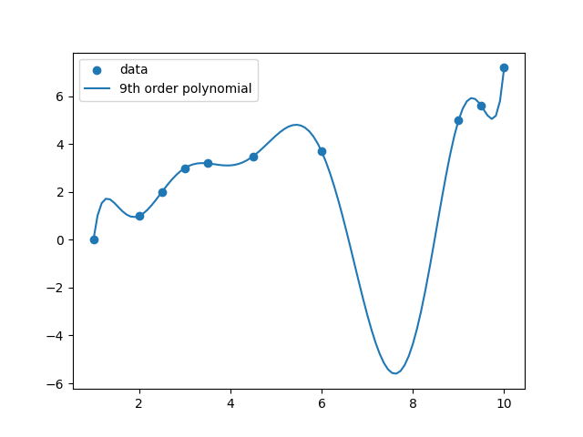
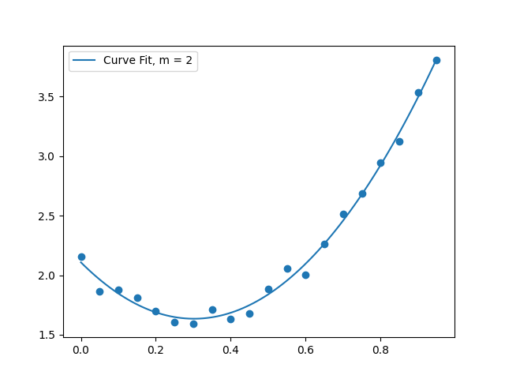

HW 10
ENGR 21, Fall 2026.
| Due Date | Thu, Nov 19 |
| Turn in link | Gradescope PDF and Code |
| URL | emadmasroor.github.io/E21-F26/Homework/HW10 |
What to turn in
Combine all written HW into one PDF file.
| Problem | Format |
|---|---|
| 1 | A single Python file named prob1_interpolation.py |
| 2 | A single Python file named prob2_curvefit.py |
| 3 | |
| 4 |
1 Polynomial Interpolation
In class, we derived a linear system of equations for finding the coefficients of an order-\(n\) polynomial that interpolates between (i.e., passes through) \(n+1\) points.
\[ {\begin{bmatrix} x_0^0 & x_0^1 & x_0^2 & \cdots & x_0^n \\ x_1^0 & x_1^1 & x_1^2 & \cdots & x_1^n \\ \vdots & \vdots & \vdots & \ddots & \vdots \\ x_n^0 & x_n^1 & x_n^2 & \cdots & x_n^n \end{bmatrix}} \begin{bmatrix} a_0 \\ a_1 \\ \vdots \\ a_n \end{bmatrix} = \begin{bmatrix} y_0 \\ y_1 \\ \vdots \\ y_n \end{bmatrix} \]
You will submit a single Python file for this problem. Put your import statements and function definitions at the top of the file, and write the rest of your code underneath. The graders should be able to run your file as-is.
1.1 Set up the linear system of equations
Write a Python function that takes as input an array of x-values and an array of y-values, representing ordered pairs \((x_i,y_i)\), and returns (1) the system matrix, and (2) the right-hand-side vector, from the equations shown above.
1.2 Solve the linear system for the data provided
Consider the x-y values below.
interpolate_these.txt
Write Python code that
- Loads the data from
interpolate_these.txtusingnumpy.loadtxt() - Assigns the columns of the text file to two separate 10-element
numpyarrays, named, e.g.,x_dataandy_data - Calls your function
interpolation_systemfrom above and stores the matrix and right-hand side. - Uses the
numpyfunctionnumpy.linalg.solveto solve the system of equations \(Ax=b\), where \(A\) is the matrix frominterpolation_systemand \(b\) is the right-hand side frominterpolation_system. Here, \(x\), the unknown vector, contains the coefficients of our sought-for polynomial, \(\{ a_0, a_1, a_2, ..., a_n \}\).
1.3 Assemble an interpolating function that uses the coefficients
Now that you have found coefficients \(\{ a_0, a_1, a_2, ..., a_n \}\) that define the \(n\)-degree polynomial that interpolates between these points, write a new function that evaluates this polynomial for any \(x\).
Recall that the mathematical form of this interpolating function is \[f(x; a_0, a_1, ..., a_n) = a_0 + a_1 x + a_2 x^2 + a_3 x^3 + ...\]
Your task is to write a Python function that evaluates this interpolating function at any value of \(x\), for any given set of coefficients \(\{ a_0, a_1, a_2, ..., a_n \}\).
numpy already contains a function that does essentially this; it’s called numpy.polyval. You may choose to implement this task as a ‘wrapper’ around polyval. It should be straightforward to write your own code without using polyval, too.
Also Note: This function will be generic; it won’t contain any information from problem 1.1 or problem 1.2. Later, when you call the function, you’ll provide information about what exactly the coefficients are — and they will be the ones you found in problem 1.2.
1.4 Make a plot showing the data points and the interpolation
Generate a plot that shows the data points together with the interpolating curve. The following snippets of code will help you with this.
import numpy as np
import matplotlib.pyplot as plt
# Assuming x_vals, y_vals contains the coordinates
# of the data points:
plt.scatter(x_vals,y_vals)
# Assuming you have solved 1.2 and you have an array
# of coefficients [a_0, a_1, a_2, ..., a_n] called "a"
# found after solving the linear system in problem 1.2:
# Generate 100 x-values between the first and last coordinate
x_continuous = np.linspace(x_vals[0],x_vals[-1],100)
# Evaluate your interpolating function at all 100 points
y_continuous = interpolating_polynomial(x_continuous,a)
# Make a line plot
plt.plot(x_continuous,y_continuous,label='Interpolating func')
plt.legend()
# Save it
plt.savefig("interpolation.png")
# Show the plot
plt.show()Your plot should look substantially similar to the one below.

2 Polynomial curve fit using least-squares
In class, we saw that the linear system for finding a best-fit curve takes the following form:
\[ \begin{bmatrix} \sum x_i^0 & \sum x_i^1 & \sum x_i^2 & \cdots & \sum x_i^m \\ \sum x_i^1 & \sum x_i^2 & \sum x_i^3 & \cdots & \sum x_i^{m+1} \\ \sum x_i^2 & \sum x_i^3 & \sum x_i^4 & \cdots & \sum x_i^{m+2} \\ \vdots & \vdots & \vdots & \ddots & \vdots \\ \sum x_i^m & \sum x_i^{m+1} & \sum x_i^{m+2} & \cdots & \sum x_i^{m+m} \end{bmatrix} \begin{bmatrix} a_0 \\ a_1 \\ a_2 \\ \vdots \\ a_m \end{bmatrix} = \begin{bmatrix} \sum x_i^0 y_i \\ \sum x_i^1 y_i \\ \sum x_i^2 y_i \\ \vdots \\ \sum x_i^m y_i \end{bmatrix} \]
Instructions
You will submit a single Python file for this problem. Put your import statements and function definitions at the top of the file, and write the rest of your code underneath. The graders should be able to run your file as-is.
2.1 A function for generating the linear system
Complete the activity from class, i.e., write a Python function that takes as input an array of x values, an array of y values, and an integer \(m\), where \(m\) is the order of the polynomial that is to be fit to the data. The function should return a matrix of size \((m+1) \times (m+1)\) and an array of size \(m+1\).
2.2 Solve the linear system for the data provided using \(m = 2\)
- Loads the data from the given text file using
numpy.loadtxt() - Assigns the columns of the text file to two separate 10-element
numpyarrays, named, e.g.,x_dataandy_data - Calls your function
curvefit_systemfrom above, withm=2, and stores the matrix and right-hand side. - Uses the
numpyfunctionnumpy.linalg.solveto solve the system of equations \(Ax=b\), where \(A\) is the matrix fromcurvefit_systemand \(b\) is the right-hand side fromcurvefit_system. Here, \(x\), the unknown vector, contains the coefficients of our sought-for polynomial, \(\{ a_0, a_1, a_2, ..., a_m \}\).
2.3 Assemble a curve-fit function that uses the coefficients
Now that you have found coefficients \(\{ a_0, a_1, a_2, ..., a_m \}\) that define the \(m\)-degree polynomial that best fits these points, write a new function that evaluates this polynomial for any \(x\).
Recall that the mathematical form of this polynomial function is \[f(x; a_0, a_1, ..., a_m) = a_0 + a_1 x + a_2 x^2 + a_3 x^3 + ...\]
Your task is to write a Python function that evaluates this function at any value of \(x\), for any given set of coefficients \(\{ a_0, a_1, a_2, ..., a_m \}\).
numpy already contains a function that does essentially this; it’s called numpy.polyval. You may choose to implement this task as a ‘wrapper’ around polyval. It should be straightforward to write your own code without using polyval, too.
This function will be generic; it won’t contain any information from problem 2.1 or problem 2.2. Later, when you call the function, you’ll provide information about what exactly the coefficients are — and they will be the ones you found in problem 2.2.
2.4 Make a plot showing the data points with a quadratic curve fit
Generate a plot that shows the data points together with a quadratic best-fit curve. The following snippets of code will help you with this.
import numpy as np
import matplotlib.pyplot as plt
# Assuming x_vals, y_vals contains the coordinates
# of the data points:
plt.scatter(x_vals,y_vals)
# Assuming you have solved 2.2 and you have an array
# of coefficients [a_0, a_1, a_2, ..., a_m] called "a"
# found after solving the linear system in problem 2.2:
# Generate 100 x-values between the first and last coordinate
x_continuous = np.linspace(x_vals[0],x_vals[-1],100)
# Evaluate your interpolating function at all 100 points
y_continuous = curvefit_polynomial(x_continuous,a)
# Make a line plot
plt.plot(x_continuous,y_continuous,label='Best Fit')
plt.legend()
# Save it
plt.savefig("bestfit.png")
# Show the plot
plt.show()Your plot should look substantially similar to the one below.

3 Interpolation with non-polynomial functions
Find the values of coefficients \(\{a,b,c,d\}\) such that the function \[f(x) = a + b e^{x} + cx^2 + d \sin x\] passes through the points
| x | y |
|---|---|
| 0.0 | 0.2 |
| 1.0 | 2.0 |
| 2.0 | 1.2 |
| 3.0 | 3.0 |
using the following procedure
- Write down the equations that must be solved, in terms of \(a\), \(b\), \(c\) and \(d\).
- Arrange the equations in the form of a linear system \(Ax=b\), where \(x\) is a vector containing the unknown parameters \([a,b,c,d]\).
- You should now have a matrix and a right-hand side vector. Use any method you like to find the solution to this linear system. e.g., you can use
numpy.linalg.solve, or you can use Gaussian elimination, etc. - Report the results as numbers, e.g., \(a = 1.23, b = 4.56,...\) etc.
Turn in all of your work as part of the PDF submission for this HW.
You can check if your values for \(a\), \(b\), \(c\) and \(d\) are correct by plotting \(f(x)\) and ensuring it passes through the points given.
4 Evaluating curve fits
Download the files data1.csv and data2.csv, as well as the Python files newtonPoly.py and polyFit.py.
newtonPoly.pyuses Newton’s polynomial to determine the (unique) interpolating polynomial that connects a set of points together. Newton’s polynomial is a technique for interpolating between points with a polynomial curve. Since polynomial interpolation is typically unique, Newton’s method of finding a polynomial is equivalent to the method that you used in problem 1. You are provided all of the code needed to use Newton’s method for interpolation, so you should not need to write much code for problem 4. You can read about Newton’s polynomial interpolation technique in the Polynomial Interpolation section of the Kiuslaas textbook.polyFit.pyimplements a curve-fitting procedure using ap olynomial of a specified degree.
Your task is to perform polynomial interpolation as well as polynomial curve-fitting on the two given sets of data.
No modifications whatsoever are needed in newtonPoly.py or polyFit.py. These functions are provided with the electronic version of the textbook.
4.1 Data set 1
Make a single plot that contains:
- Scatter plot of the data points
- The (unique) polynomial interpolation between all the points, and
- Three additional curves, representing polynomial curve fits of degree 1, 2 and 3 (linear, quadratic and cubic).
Use the following code to get started.
# Import functions. Make sure that your downloaded files are in the present working directory.
import numpy as np
from newtonPoly import coeffts, evalPoly
from polyFit import polyFit, evalPolyFit
import matplotlib.pyplot as plt
x1 = np.loadtxt('data1.csv')[:,0]
y1 = np.loadtxt('data1.csv')[:,1]
# Create x-axis to plot
xs = np.linspace(x1[0],x1[-1],100)
# Find coefficients of Newton's Polynomial (interpolation)
a = coeffts(x1,y1)
# Evaluate Newton's polynomial at values 'xs'
y_interp = evalPoly(a,x1,xs)
# Curve fit using polynomials of different degrees.
b1 = polyFit(x1,y1,1)
b2 = polyFit(x1,y1,2)
# Evaluate curve-fit at values 'xs'
y_curvefit1 = evalPolyFit(xs,y1,b1)
y_curvefit2 = evalPolyFit(xs,y1,b2)
# Make plot
plt.plot(x1,y1,'o',label='data',color='black')
plt.plot(xs,y_interp,'-',label='Interpolation',color='black')
plt.plot(xs,y_curvefit1,'r--',label='Fit, m = 1')
plt.plot(xs,y_curvefit2,'b--',label='Fit, m = 2')
plt.legend()
plt.show()Turn in your resulting plot.
4.2 Data set 2
Make a single plot that contains:
- Scatter plot of the data points
- The (unique) polynomial interpolation between all the points, and
- Five additional curves, representing polynomial curve fits of degree 1, 2, 3, 4 and 6.
Use the following code to get started:
# Import functions. Make sure that your downloaded files are in the present working directory.
import numpy as np
from newtonPoly import coeffts, evalPoly
from polyFit import polyFit, evalPolyFit
import matplotlib.pyplot as plt
x1 = np.loadtxt('data2.csv')[:,0]
y1 = np.loadtxt('data2.csv')[:,1]
# Create x-axis to plot
xs = np.linspace(x1[0],x1[-1],100)
# Newton Polynomial (interpolation)
a = coeffts(x1,y1)
# Evaluate Newton's polynomial at values 'xs'
y_interp = evalPoly(a,x1,xs)
# Curve fit with order m = 1
b1 = polyFit(x1,y1,1)
# Evaluate curve-fit at values 'xs'
y_curvefit1 = evalPolyFit(xs,y1,b1)
# Make plot
plt.plot(x1,y1,'o',label='data',color='black')
plt.plot(xs,y_interp,'-',label='Interpolation',color='black')
plt.plot(xs,y_curvefit1,'r--',label='Fit, m = 1')
plt.legend()
plt.show()Turn in your resulting plot.
4.2.1 Discussion
Explain which curve fit, out of the ones you have plotted, you would choose to represent each of these datasets. You should write a short paragraph each for data set 1 and data set 2.